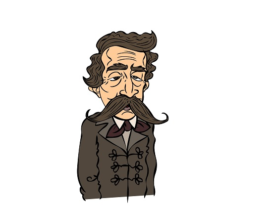

Életrajz
Arany János, a 19. századi magyar irodalom egyik legkiemelkedőbb alakja, páratlanul gazdag életművet hagyott hátra, amely ma is mély nyomokat hagy az irodalom és a kultúra világában. Született 1817-ben, és bár korai halálával, 1882-ben távozott az élők sorából, munkássága és életműve örök életre szól. Arany élete a költészet és az irodalom iránti szenvedélyéről szól. Az irodalom iránti rajongása már fiatalon megmutatkozott, és gyorsan vált az ország egyik legelismertebb költőjévé. Ő volt az egyik legfontosabb alakja a magyar romantika és a századfordulós realizmus korszakának. Verseit nemcsak a magyar irodalomban, hanem az európai irodalmi színtéren is méltán elismerték és dicsérték.

...
Másodszor, Arany élete a szabadság és az önállóság kereséséről is tanúskodik. Politikai nézetei és költészete által is támogatta a nemzeti önállóságot és a magyar nép szabadságvágyát. Munkássága szorosan összefonódott a magyar történelemmel, és számos költeménye hűen tükrözi a magyar nemzeti identitást és küzdelmeket.Másodszor, Arany élete a szabadság és az önállóság kereséséről is tanúskodik. Politikai nézetei és költészete által is támogatta a nemzeti önállóságot és a magyar nép szabadságvágyát. Munkássága szorosan összefonódott a magyar történelemmel, és számos költeménye hűen tükrözi a magyar nemzeti identitást és küzdelmeket.
...
Végül, Arany életműve az utókor számára is inspiráció forrása marad. Verseiben és műveiben olyan emberi értékekről, mint az igazság, az emberség és a hazaszeretet, mély bölcsességgel és szépséggel írt. Munkássága mai napig élő, és olvasók millióinak nyújt vigaszt, inspirációt és örömöt az ősi magyar kultúra és identitás iránti szeretetével és tiszteletével. Arany János így marad örök életre szóló legendaként a magyar irodalom és kultúra szívében.